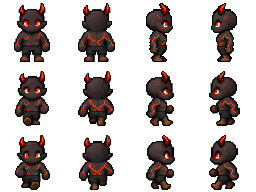
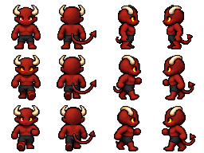
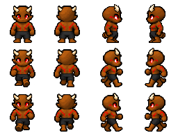
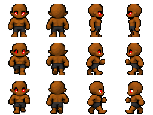
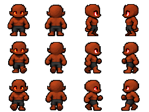

GOA race rig inventory
Male Elf and Human have saved approved baselines. Orc has an existing review rig.
Open each rig to review movement. Expand a family to compare the original sheets.
Hybrid inheritance is pending anatomy review. Silhouette checks alone cannot establish joint,
layer or equipment compatibility. These sheets are preserved source art.
Machine-readable inventory and baseline hashes
Male/Demon · body preparation needed 1 source appearances Male/DemonFly · body preparation needed 1 source appearances Male/DevourerZombie · body preparation needed 1 source appearances Male/Dwarves · body preparation needed 8 source appearances Male/FrogMan · body preparation needed 8 source appearances Male/Gargoyle · body preparation needed 1 source appearances Male/Gargoyle variants · body preparation needed 7 source appearances Amber flyingsilhouette differs needs anatomy review Amber groundsilhouette differs needs anatomy review Ice flyingsilhouette differs needs anatomy review Ice groundsilhouette differs needs anatomy review Red flyingsilhouette differs needs anatomy review Red groundsilhouette differs needs anatomy review basesource body Male/GargoyleFly · body preparation needed 1 source appearances Male/Goblins · body preparation needed 8 source appearances Male/HumanBlack · body preparation needed 8 source appearances 
Ashensilhouette differs needs anatomy review 
Hellbloodedsilhouette differs needs anatomy review 
Markedsilhouette differs needs anatomy review 
Possessed1silhouette differs needs anatomy review 
Possessed2silhouette differs needs anatomy review Werewolfsilhouette differs needs anatomy review Zombiesilhouette differs needs anatomy review basesource body Male/Kobold · body preparation needed 8 source appearances Ashensilhouette differs needs anatomy review Hellbloodedsilhouette differs needs anatomy review Markedsilhouette differs needs anatomy review Possessed1silhouette differs needs anatomy review Possessed2silhouette differs needs anatomy review Werewolfsilhouette differs needs anatomy review Zombiesilhouette differs needs anatomy review basesource body Male/LizardMan · body preparation needed 8 source appearances Ashensilhouette differs needs anatomy review Hellbloodedsilhouette differs needs anatomy review Markedsilhouette differs needs anatomy review Possessed1silhouette differs needs anatomy review Possessed2silhouette differs needs anatomy review Werewolfsilhouette differs needs anatomy review Zombiesilhouette differs needs anatomy review basesource body Male/Night Elf · body preparation needed 8 source appearances Ashensilhouette differs needs anatomy review Hellbloodedsilhouette differs needs anatomy review Markedsilhouette differs needs anatomy review Possessed1silhouette differs needs anatomy review Possessed2silhouette differs needs anatomy review Werewolfsilhouette differs needs anatomy review Zombiesilhouette differs needs anatomy review basesource body Male/Orc · needs visual review Open existing animation rig 8 source appearances Ashensilhouette differs needs anatomy review Hellbloodedsilhouette differs needs anatomy review Markedsilhouette differs needs anatomy review Possessed1silhouette differs needs anatomy review Possessed2silhouette differs needs anatomy review Werewolfsilhouette differs needs anatomy review Zombiesilhouette differs needs anatomy review basesource body Male/Skeleton · body preparation needed 1 source appearances Male/Vampire · body preparation needed 1 source appearances Male/VampireFly · body preparation needed 1 source appearances Female/Dwarves · body preparation needed 8 source appearances Ashensilhouette differs needs anatomy review Hellbloodedsilhouette differs needs anatomy review Markedsilhouette differs needs anatomy review Possessed1silhouette differs needs anatomy review Possessed2silhouette differs needs anatomy review Werewolfsilhouette differs needs anatomy review Zombiesilhouette differs needs anatomy review basesource body Female/Elf · body preparation needed 8 source appearances Ashensilhouette differs needs anatomy review Hellbloodedsilhouette differs needs anatomy review Markedsilhouette differs needs anatomy review Possessed1silhouette differs needs anatomy review Possessed2silhouette differs needs anatomy review Werewolfsilhouette differs needs anatomy review Zombiesilhouette differs needs anatomy review basesource body Female/FrogMan · body preparation needed 8 source appearances Ashensilhouette differs needs anatomy review Hellbloodedsilhouette differs needs anatomy review Markedsilhouette differs needs anatomy review Possessed1silhouette differs needs anatomy review Possessed2silhouette differs needs anatomy review Werewolfsilhouette differs needs anatomy review Zombiesilhouette differs needs anatomy review basesource body Female/Goblins · body preparation needed 8 source appearances Ashensilhouette differs needs anatomy review Hellbloodedsilhouette differs needs anatomy review Markedsilhouette differs needs anatomy review Possessed1silhouette differs needs anatomy review Possessed2silhouette differs needs anatomy review Werewolfsilhouette differs needs anatomy review Zombiesilhouette differs needs anatomy review basesource body Female/Human · body preparation needed 8 source appearances Ashensilhouette differs needs anatomy review Hellbloodedsilhouette differs needs anatomy review Markedsilhouette differs needs anatomy review Possessed1silhouette differs needs anatomy review Possessed2silhouette differs needs anatomy review Werewolfsilhouette differs needs anatomy review Zombiesilhouette differs needs anatomy review basesource body Female/HumanBlack · body preparation needed 8 source appearances Ashensilhouette differs needs anatomy review Hellbloodedsilhouette differs needs anatomy review Markedsilhouette differs needs anatomy review Possessed1silhouette differs needs anatomy review Possessed2silhouette differs needs anatomy review Werewolfsilhouette differs needs anatomy review Zombiesilhouette differs needs anatomy review basesource body Female/Kobold · body preparation needed 8 source appearances Ashensilhouette differs needs anatomy review Hellbloodedsilhouette differs needs anatomy review Markedsilhouette differs needs anatomy review Possessed1silhouette differs needs anatomy review Possessed2silhouette differs needs anatomy review Werewolfsilhouette differs needs anatomy review Zombiesilhouette differs needs anatomy review basesource body Female/LizardMan · body preparation needed 8 source appearances Ashensilhouette differs needs anatomy review Hellbloodedsilhouette differs needs anatomy review Markedsilhouette differs needs anatomy review Possessed1silhouette differs needs anatomy review Possessed2silhouette differs needs anatomy review Werewolfsilhouette differs needs anatomy review Zombiesilhouette differs needs anatomy review basesource body Female/Night Elf · body preparation needed 8 source appearances Ashensilhouette differs needs anatomy review Hellbloodedsilhouette differs needs anatomy review Markedsilhouette differs needs anatomy review Possessed1silhouette differs needs anatomy review Possessed2silhouette differs needs anatomy review Werewolfsilhouette differs needs anatomy review Zombiesilhouette differs needs anatomy review basesource body Female/Orc · body preparation needed 8 source appearances Ashensilhouette differs needs anatomy review Hellbloodedsilhouette differs needs anatomy review Markedsilhouette differs needs anatomy review Possessed1silhouette differs needs anatomy review Possessed2silhouette differs needs anatomy review Werewolfsilhouette differs needs anatomy review Zombiesilhouette differs needs anatomy review basesource body